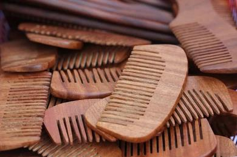

Neem tree (Azadirachta Indica) has proven medicinal properties that prevent fungal growth and can reduce dandruff. This wide tooth comb has rounded tips designed to give your scalp a gentle massage, aiding in normalizing oil production and stimulating hair growth.
Benefits
1. A healthy scalp.
2. Nourishes the hair.
3. Promotes hair growth.
4. Prevents greasiness.
5. Prevents breakage and hair loss.
6. Prevents dandruff.


1. Acts as an antibacterial clearing up skin irritations and acne.
2.Chock full of antioxidants.
3.suitable for all skin types including kids.
4.keeps the skin moisturized, and it can heal wounds by preventing dry skin flakes.
Ingredients :- Saponified Neem Oil, Fresh Basil Extract, Coconut Oil, Castor Oil, Unrefined Sal Butter, Rice Bran Oil, Mahua Oil, Distilled Water. Net Wgt :- 150 gms